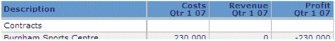
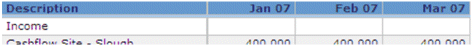
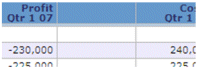
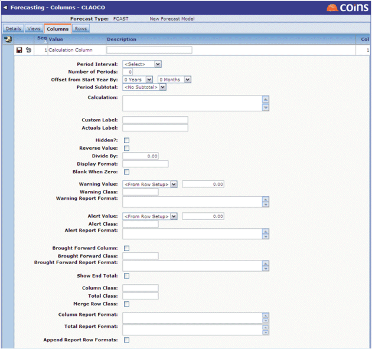

To add a new column:
- Choose the view to which they belong from the Selectors filter at the bottom of the screen.
- Use the Add Type drop-down to choose the Type of column to be included, then click
 . The available types are:
. The available types are:
Column Type Description Calculation Column A single column used to calculate values for display, rather than configured to automatically generate columns over a specified time interval. Columns used to present certain aspects of contract cost or revenue data. The items to be displayed are selected via a can-do list of contract items.
For example, this option could be used to configure separate columns to show contract cost, revenue and profit figures for the same quarter:

Row Value Automatically generated columns used to present data over a specified period of time according to defined intervals and limits. Subtotal and total columns can be incorporated as well.
For example, a simple monthly view:
Site Value Columns used to present certain aspects of
Checkbox lists of Cashflow Cost Sections,
As with
Text Column A single column used to introduce a manually-headed column, often as a break in the display for ease of viewing, for example:  Regardless of the column type selected, when adding a new record the majority of the fields to be updated are the same:

When adding a
When adding a Site Value column there are additional options to select the Site Value type, plus selection options by Cashflow Cost Sections,